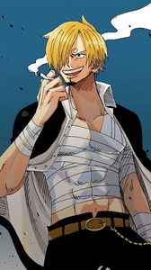

Sanji
Sanji, the Straw Hat Pirates’ cook, is a master of culinary arts and a skilled fighter. He dreams of finding the All Blue, a legendary sea where all ingredients can be found. Sanji’s chivalrous nature and fiery kicks make him a valuable crew member.